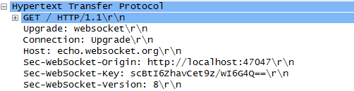

Web Workers and Web Sockets
Web Sockets
- Two way communication with a remote host
- Bi-directional
- Full duplex
- Can I Use?
Tradition
- The web has used request/response for 20+ years
- Long polling
- Forever frames
- Infinite POSTs
- All of them have overhead
WebSockets
var socket = new WebSocket("ws://echo.websocket.org");
socket.send(message);
Handshakes
- Currently in flux
- Ensures client and server can communicate
- HTTP GET with Upgrade header (HTTP 1.1)
- Can setup tunnel through proxies

Events
socket.onmessage = onSocketMessage;
function onSocketMessage(event) {
alert(event.data);
}
WebSockets versus XmlHttpRequest
- WebSockets can cross domains
- WebSockets do not use HTTP
- WebSockets are duplex
- WebSockets have different threat models
Security
- Authentication and Authorization
- Beware: encoding, DOS attacks, data formats
- ws is plaintext, wss is encrypted
- Validate the origin
- XSS is a concern
- Anyone with a socket library can connect
WebWorkers
- JavaScript is a single threaded language
- Pro: Threads are Evil
- Con: threads can be useful, too (setTimeout, setInterval)
Background Services
- WebWorkers run in the background
- WebWorkers run in parallel
- Event driven communication (message ports)
- Still in flux
- Heavyweight
- Can I Use?
Dedicated Worker
- One to one communication via message port
- Start the worker with a script
var worker = new Worker("primeCalculation.js");
worker.onmessage = function(event) {
$("#calculationOutput").append($("<div>").text(event.data));
};
Worker Dos and Don'ts
- No access to DOM, window, document, parent
- Can post messages
- Can use sockets, XHR
- Can use timers, location, application cache
- Span sub-workers
- Import scripts (importScripts('script1.js');)
- Refer to 'self' and 'this'
Events
- onmessage
- onerror
- WebWorkers can wait in a message loop for a message
var employee = {name: "Scott", id: 1};
postMessage(employee);
Shared WebWorkers
- Many windows can use the same worker
- Worker maintains many connections
Summary
- WebSockets for real time communication
- WebWorkers to free the UI thread